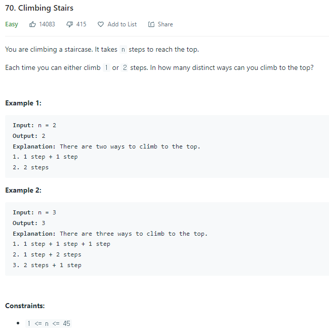

#INFO
난이도 : Easy
출처 : https://leetcode.com/problems/climbing-stairs/
Climbing Stairs - LeetCode
Level up your coding skills and quickly land a job. This is the best place to expand your knowledge and get prepared for your next interview.
leetcode.com

#SOLVE
DP(Dynamic Programming) Algorithm에 대한 선수 지식이 있다면 쉽게 풀이할 수 있는 문제입니다.
Bottom-up 방식을 사용해 문제를 풀이했습니다.
우선, stairs 벡터를 생성해 줍니다. stairs 벡터는 계단이 n칸일 때 올라갈 수 있는 경우의 수를 저장합니다.
ex) stairs[4] = 계단이 4칸일 때 올라갈 수 있는 총 경우의 수
vector<int> stairs(n + 1);
n = 1 계단이 총 한 칸인 상황을 생각해 봅시다.
경우의 수는 당연히도 1가지 밖에 존재하지 않습니다.
stairs[1] = 1;
다음으로 n = 2, 계단이 총 2칸인 경우를 생각해 봅시다.
2칸을 오르는 경우의 수는 1step + 1step , 2step 총 2가지입니다.
stairs[2] = 2;
n = 3 계단이 총 3칸입니다.
3칸을 오르기 위해서는 우선 첫 걸음으로 무조건 1step 혹은 2step을 올라가야 합니다.
이유는 조금만 생각해보면 당연한데 문제에서 한 번에 계단을 2칸을 초과해서 올라갈 수 없다는 조건을 제시했기 때문입니다.
따라서 3칸을 오르는 경우의 수는 첫 걸음으로 1step을 올라간 케이스와 2step을 올라간 케이스로 나뉩니다.
1) 첫 걸음으로 1step을 올라간 경우
(1step) + 1step + 1step
(1step) + 2step
→ stairs[2]
2) 첫 걸음으로 2step을 올라간 경우
(2step) + 1step
→ stairs[1]
즉, 점화식으로 표현해 보면 다음과 같습니다.
stairs[n] = stairs[n-1] + stairs[n-2];#CODE
class Solution {
public:
int climbStairs(int n) {
vector<int> stairs(n + 1);
stairs[0] = 1;
stairs[1] = 1;
// bottom - up
for(int i = 2; i <= n; ++i)
stairs[i] = stairs[i - 1] + stairs[i - 2];
return stairs[n];
}
};